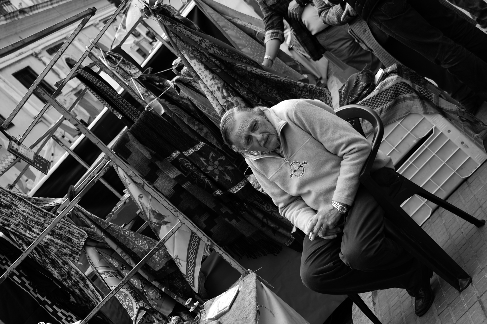
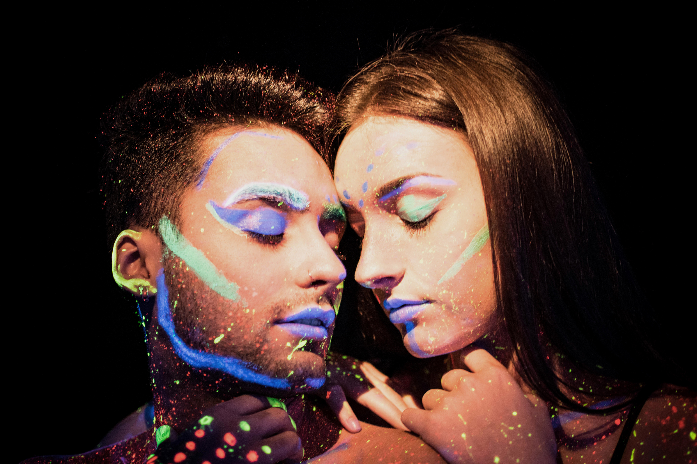
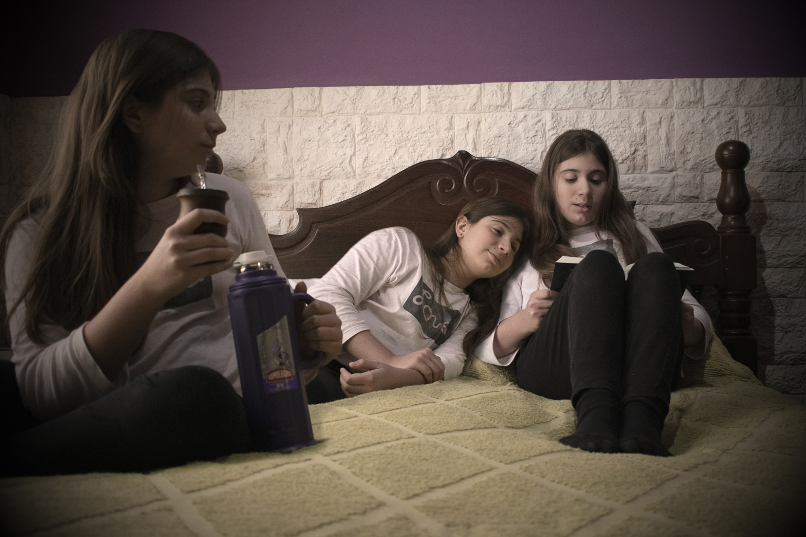

Servicios

Fotografía de exterior
Registro momentos auténticos y espontáneos en entornos públicos de la vida cotidiana. Busco esas emociones y capturarlas en el instante preciso utilizando técnicas de enfoque con mas de 5 tipos de lentes para obtener lo urbano en su estado natural.

Fotografía de estudio
Creo atmósferas artísticas buscando la precisión del producto o retrato fotografiado destacandolo sin depender del clima y la luz solar. En retratos capturar la expresión y características es escencial. En productos cotrolar la iluminación y sombras es de suma importancia para lograr un enfoque total de lo que quieras comunicar.

Foto montaje
La magia de un buen fotomontaje está en los detalles que nadie nota. Por eso creo composiciones únicas artísticas y digitales combinando elementos visuales increíbles para que tus fotos transmitan tus emociones. En mis proyectos me enfoco en la coherencia visual: desde la caída natural de las sombras y temperatura del color. Teniendo como resultado una imagen donde el sujeto y el entorno conviven en armonía, rompiendo la barrera entre lo real y lo digital.